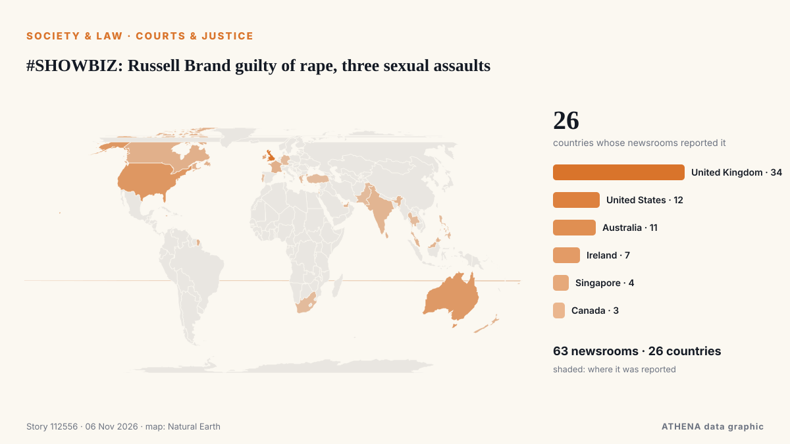

#SHOWBIZ: Russell Brand guilty of rape, three sexual assaults

The jury in the Russell Brand rape trial begins its deliberations in London after more than three weeks of evidence. من ABC News Australia
نشرته بشكل مستقل 63 مصدرًا في 26 دولة منذ 3 نوفمبر، وأول من نشره ABC News Australia؛ والتغطية تتراجع. يقدّر ATHENA الخطر بأنه معتدل (2.7/10)، ويعود ذلك أساسًا إلى خطورة الضرر الموصوف ونطاقه الجغرافي والقطاعي. الثقة 89٪ (مرتفعة)، وعدد المصادر المستقلة المؤكِّدة: 63، بمتوسط موثوقية للمصادر يبلغ 72٪. وسائل الإعلام حسب البلد: المملكة المتحدة (14), الولايات المتحدة (7), أيرلندا (5). التغطية: من 3 نوفمبر إلى 5 نوفمبر، 48 ساعة.
لماذا يهم: تغيّر التعديلات القانونية والسياسية الحقوق والواجبات والخدمات العامة لمن تشملهم.
ما الذي تغيّر: 81 تقارير جديدة من 61 غرف أخبار خلال 24 ساعة حتى 6 نوفمبر.
العنوان الأول: Jury retires to consider verdicts in Russell Brand trial
تُعرض العناوين بالإنجليزية كما نُشرت.
نظرة سريعة
اختير وقُيِّم وكُتب وفق منهجية ATHENA المنشورة. لا يتدخل أي محرر في الأحداث بعينها. كيف يُنتَج ›
| 03 Nov 14:54 UTC | 9 |
|---|---|
| 03 Nov 17:54 UTC | 1 |
| 03 Nov 20:54 UTC | 0 |
| 03 Nov 23:54 UTC | 0 |
| 04 Nov 02:54 UTC | 1 |
| 04 Nov 05:54 UTC | 0 |
| 04 Nov 08:54 UTC | 1 |
| 04 Nov 11:54 UTC | 0 |
| 04 Nov 14:54 UTC | 0 |
| 04 Nov 17:54 UTC | 0 |
| 04 Nov 20:54 UTC | 0 |
| 04 Nov 23:54 UTC | 0 |
| 05 Nov 02:54 UTC | 0 |
| 05 Nov 05:54 UTC | 0 |
| 05 Nov 08:54 UTC | 2 |
| 05 Nov 11:54 UTC | 34 |
| 05 Nov 14:54 UTC | 33 |
| 05 Nov 17:54 UTC | 9 |
| 05 Nov 20:54 UTC | 0 |
| 05 Nov 23:54 UTC | 2 |
| 06 Nov 02:54 UTC | 1 |
| 03 Nov 15:58 UTC | 0.0 |
|---|---|
| 05 Nov 14:36 UTC | 1.2 |
| 05 Nov 15:03 UTC | 2.0 |
| 05 Nov 15:14 UTC | 2.7 |
| 06 Nov 05:26 UTC | 2.7 |
لماذا هذه الأرقام
الأهمية
الخطر
الثقة
التغطية — من نشر الخبر ومتى
العنوان كما نُشر · يفتح الأصل- ABC News Australia · أسترالياThe key takeaways from Russell Brand's trial as jurors consider their verdict
- The Canadian Press (via CityNews) · كنداJury begins deliberating at Russell Brand’s rape and sexual assault trial
- Belfast Telegraph · المملكة المتحدةJury retires to consider verdicts in Russell Brand trial
- The Irish News (Belfast) · المملكة المتحدةJury retires to consider verdicts in Russell Brand trial
- Gulf News · الإمارات العربية المتحدةJury begins deliberating at Russell Brand's rape and sexual assault trial
- Stuff · نيوزيلنداJury begins deliberating at Russell Brand's rape and sexual assault trial
- The Straits Times · سنغافورةJury begins deliberations in Russell Brand's UK sexual offences trial
- Deadline · الولايات المتحدةRussell Brand Trial: Jury Begins Verdict Deliberations
- Rolling Stone · الولايات المتحدةJury Begins Deliberation in Russell Brand’s Rape and Sexual Assault Trial
- Manchester Evening News · المملكة المتحدةRussell Brand jury to consider verdicts in rape case involving six women across 10-year period
- FBC News · فيجيJury begins deliberating at Russell Brand’s rape and sexual assault trial
- Evening Standard (London) · المملكة المتحدةWho is Laura Gallacher? Russell Brand’s wife stuck by convicted rapist husband during trial
- Israel Hayom (English) · إسرائيلRussell Brand found guilty of rape in London court
- Express Tribune · باكستانRussell Brand found guilty by UK court of rape and sexual assaults
- Deadline · الولايات المتحدةRussell Brand Found Guilty Of Rape & Sexual Assault
- The Canadian Press (via CityNews) · كنداRussell Brand convicted of rape and sexual assault
- Variety · الولايات المتحدةRussell Brand Found Guilty of Rape and Sexual Assault at London Trial; Taken Into Custody
- TheJournal.ie · أيرلنداRussell Brand convicted of rape and multiple sexual assaults by London court
- The Herald (Scotland) · المملكة المتحدةRussell Brand found guilty as two new rape complaints emerge
- RTÉ News · أيرلنداRussell Brand found guilty of rape, sexual assaults
- Evening Standard (London) · المملكة المتحدةRussell Brand found guilty of rape and sexual assaults
- The Straits Times · سنغافورةComedian Russell Brand found guilty by UK court of rape and sexual assaults
- Rolling Stone · الولايات المتحدةRussell Brand Found Guilty in Rape Trial
- The Scotsman · المملكة المتحدةRussell Brand found guilty of rape and sexual assaults
- The Hollywood Reporter · الولايات المتحدةRussell Brand Found Guilty of Rape and Sexual Assault at London Trial
- Manchester Evening News · المملكة المتحدةRussell Brand guilty of rape and sexual assault following trial
- WalesOnline · المملكة المتحدةRussell Brand found guilty of rape and sexual assault - live updates
- Liverpool Echo · المملكة المتحدةRussell Brand guilty of rape and multiple counts of sexual assault
- Irish Mirror · أيرلنداRussell Brand found guilty of raping fan and sexually assaulting three women
- France 24 English · فرنساBritish comedian Russell Brand found guilty of rape, sexual assault
- NBC News (World) · الولايات المتحدةRussell Brand found guilty of rape and sexual assault
- Irish Examiner · أيرلنداRussell Brand faces prison after being found guilty of rape and sexual assaults
- ABC News Australia · أسترالياRussell Brand found guilty of rape and sexual assault
- Birmingham Mail · المملكة المتحدةRussell Brand found guilty of rape and sexual assault
- MyLondon · المملكة المتحدةRussell Brand found guilty of rape and sexual assault
- Screen Daily · المملكة المتحدةRussell Brand found guilty of rape and sexual assault
- CBC News (alternative feed) · كنداRussell Brand convicted of rape and sexual assault
- Indian Express · الهندRussell Brand found guilty of rape and sexual assault
- Bristol Post · المملكة المتحدةRussell Brand found guilty as comedian is immediately jailed by judge
- RTÉ News · أيرلنداAs it happened: Brand faces 'significant' sentence